4.6 色彩（Color）
“光谱分布” 和 “色彩” 看似是同一事物的两个名称，但它们是不同的。光谱分布是一个纯粹的物理概念，而色彩则描述了人类对光谱的感知。因此，色彩与人类视觉系统的生理结构和大脑对视觉刺激的处理密切相关。
尽管 pbrt 中的大多数渲染计算基于光谱分布，但仍必须谨慎处理色彩。例如，渲染图像中每个像素的光谱分布必须转换为 RGB 颜色来显示在显示器上。准确执行此转换需要使用显示器色彩特性的相关信息。渲染器也会在场景描述中找到颜色，用于描述反射率和光发射。尽管人类使用颜色来描述建模场景的外观是方便的，但如果渲染器在其光传输模拟中使用光谱分布，那么这些颜色必须被转换为光谱。遗憾的是，这样做是一个不够明确的问题。人们为此开发了多种方法；在 pbrt 中实现的方法在会第 4.6.6 节中进行描述。
色彩感知的 三刺激理论（tristimulus theory） 认为，对于人类观察者来说，所有可见光谱分布都可以用三个标量值准确地表示。其基础在于眼睛中有三种类型的感光锥细胞，各自对不同波长的光敏感。自 19 世纪引入以来，这一理论经过了众多实验的检验，促成了 光谱匹配函数（spectral matching functions） 的发展，这些函数是波长的函数，可用于计算光谱分布的三刺激表示。
对光谱分布 \( S(\lambda) \) 与三个三刺激匹配函数 \( m_{{1,2,3}}(\lambda) \) 的乘积进行积分，得到三个 三刺激值（tristimulus values） \( v_i \) ：
\[
v_i = \int S(\lambda)\ m_i(\lambda)\ \text{d}\lambda
\]
匹配函数因此定义了一个 色彩空间（color space），这是一个三刺激值的三维向量空间：两个光谱的和的三刺激值由它们的三刺激值之和给出，而通过常数缩放的光谱所关联的三刺激值可以通过将三刺激值按相同的因子缩放来求出。请注意，根据这些定义，两个光谱分布的乘积的三刺激值并 不 是由它们的三刺激值的乘积给出的。这就是为什么使用像 RGB 这样的三刺激颜色进行渲染可能不会给出准确结果的原因；我们将在第 4.6.6 节中对此主题进行更多讨论。
在 pbrt 发行版中的文件 util/color.h 和 util/color.cpp 包含了本节中介绍的与颜色相关的功能的实现。
4.6.1 XYZ 颜色（XYZ Color）
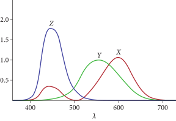图 4.18：XYZ 颜色匹配曲线。 给定的光谱分布可以通过将其分别乘以三个匹配曲线并对结果进行积分求出值 \( x_\lambda \)、 \( y_\lambda \) 和 \( z_\lambda \) 来转换为 XYZ 颜色，使用方程（4.22）。
一组重要的颜色匹配函数是由国际照明委员会（CIE）标准机构在一系列与人类测试项目的实验后确定的。它们定义了 XYZ 色彩空间（XYZ color space），并在图 4.18 中绘制。XYZ 是一个 设备无关（device-independent） 的色彩空间，这意味着它不描述特定显示器或色彩测量设备的特性。
给定一个光谱分布 \( S(\lambda) \)，其 XYZ 色彩空间坐标 \( x_\lambda \)、 \( y_\lambda \) 和 \( z_\lambda \) 是通过将其与光谱匹配曲线 \( X(\lambda) \)、 \( Y(\lambda) \) 和 \( Z(\lambda) \) 的乘积进行积分计算得出的：†（有多种不同的约定被用来定义这些积分，有时会使用其它或不使用归一化因子。对于 pbrt 来说，使用 \( Y \) 匹配曲线积分的倒数进行归一化比较方便，因为这样会使得当光谱分布的常数值为 1 时， \( y_\lambda=1 \)）
\[ \begin{align} x_\lambda &= \frac{1}{\int_{\lambda}\ Y(\lambda)\ \text{d}\lambda}\int_{\lambda}S(\lambda)\ X(\lambda)\ \text{d}\lambda \\ y_\lambda &= \frac{1}{\int_{\lambda}\ Y(\lambda)\ \text{d}\lambda}\int_{\lambda}S(\lambda)\ Y(\lambda)\ \text{d}\lambda \\ z_\lambda &= \frac{1}{\int_{\lambda}\ Y(\lambda)\ \text{d}\lambda}\int_{\lambda}S(\lambda)\ Z(\lambda)\ \text{d}\lambda \\ \end{align} \]
CIE \( Y(\lambda) \) 三刺激曲线被选为与 \( V(\lambda) \) 光谱响应曲线成比例，后者用于定义光度学量，如在公式 (4.6) 中定义的亮度。它们之间的关系是：\( V(\lambda) = 683\ Y(\lambda) \) 。
值得注意的是，具有显著不同分布的光谱可能具有非常相似的 \( x_\lambda \)、 \( y_\lambda \) 和 \( z_\lambda \) 值。对于人类观察者而言，这样的光谱看起来是相同的。这样的光谱对被称为 同色异谱（metamers）。
图 4.19 显示了在可见光范围内单一波长光的 XYZ 系数对应的曲线在 XYZ 空间中的三维图。更复杂的光谱分布的系数因此对应于沿该曲线的点的线性组合。尽管所有光谱分布都可以用 XYZ 系数表示，但并非所有 XYZ 系数的值都对应于可实现的光谱；这样的系数组称为 虚色（imaginary colors）。
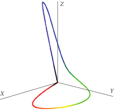图 4.19： 可见光波长的 XYZ 颜色系数图。曲线用与每个波长相关的 RGB 颜色进行着色。
在 Spectra 命名空间中，三个函数提供了从 360 纳米到 830 纳米之间以 1 纳米为增量采样的 CIE XYZ 匹配曲线。
/** Spectral 函数定义 */
namespace Spectra {
const DenselySampledSpectrum &X();
const DenselySampledSpectrum &Y();
const DenselySampledSpectrum &Z();
}
\( Y(\lambda) \) 的积分是预先计算的，并且以常量形式提供。
/** Spectrum 常量 */
static constexpr Float CIE_Y_integral = 106.856895;
还有一个 XYZ 类表示 XYZ 颜色。
/** XYZ 定义 */
class XYZ {
public:
/** XYZ 公有方法 */
XYZ(Float X, Float Y, Float Z) : X(X), Y(Y), Z(Z) {}
Float Average() const { return (X + Y + Z) / 3; }
Point2f xy() const {
return Point2f(X / (X + Y + Z), Y / (X + Y + Z));
}
static XYZ FromxyY(Point2f xy, Float Y = 1) {
if (xy.y == 0)
return XYZ(0, 0, 0);
return XYZ(xy.x * Y / xy.y, Y, (1 - xy.x - xy.y) * Y / xy.y);
}
PBRT_CPU_GPU
XYZ &operator+=(const XYZ &s) {
X += s.X;
Y += s.Y;
Z += s.Z;
return *this;
}
PBRT_CPU_GPU
XYZ operator+(const XYZ &s) const {
XYZ ret = *this;
return ret += s;
}
PBRT_CPU_GPU
XYZ &operator-=(const XYZ &s) {
X -= s.X;
Y -= s.Y;
Z -= s.Z;
return *this;
}
PBRT_CPU_GPU
XYZ operator-(const XYZ &s) const {
XYZ ret = *this;
return ret -= s;
}
PBRT_CPU_GPU
friend XYZ operator-(Float a, const XYZ &s) { return {a - s.X, a - s.Y, a - s.Z}; }
PBRT_CPU_GPU
XYZ &operator*=(const XYZ &s) {
X *= s.X;
Y *= s.Y;
Z *= s.Z;
return *this;
}
PBRT_CPU_GPU
XYZ operator*(const XYZ &s) const {
XYZ ret = *this;
return ret *= s;
}
PBRT_CPU_GPU
XYZ operator*(Float a) const {
DCHECK(!IsNaN(a));
return {a * X, a * Y, a * Z};
}
PBRT_CPU_GPU
XYZ &operator*=(Float a) {
DCHECK(!IsNaN(a));
X *= a;
Y *= a;
Z *= a;
return *this;
}
PBRT_CPU_GPU
XYZ &operator/=(const XYZ &s) {
X /= s.X;
Y /= s.Y;
Z /= s.Z;
return *this;
}
PBRT_CPU_GPU
XYZ operator/(const XYZ &s) const {
XYZ ret = *this;
return ret /= s;
}
PBRT_CPU_GPU
XYZ &operator/=(Float a) {
DCHECK(!IsNaN(a));
DCHECK_NE(a, 0);
X /= a;
Y /= a;
Z /= a;
return *this;
}
PBRT_CPU_GPU
XYZ operator/(Float a) const {
XYZ ret = *this;
return ret /= a;
}
PBRT_CPU_GPU
XYZ operator-() const { return {-X, -Y, -Z}; }
PBRT_CPU_GPU
bool operator==(const XYZ &s) const { return X == s.X && Y == s.Y && Z == s.Z; }
PBRT_CPU_GPU
bool operator!=(const XYZ &s) const { return X != s.X || Y != s.Y || Z != s.Z; }
PBRT_CPU_GPU
Float operator[](int c) const {
DCHECK(c >= 0 && c < 3);
if (c == 0)
return X;
else if (c == 1)
return Y;
return Z;
}
PBRT_CPU_GPU
Float &operator[](int c) {
DCHECK(c >= 0 && c < 3);
if (c == 0)
return X;
else if (c == 1)
return Y;
return Z;
}
std::string ToString() const;
/** XYZ 公有成员 */
Float X = 0, Y = 0, Z = 0;
};
它的实现显而易见，使用三个 Float 值来表示三个颜色分量。所有常规的算术运算都为 XYZ 提供了方法，这些方法在此文本中未包含。
/** XYZ 公有方法 */
XYZ(Float X, Float Y, Float Z) : X(X), Y(Y), Z(Z) {}
/** XYZ 公有成员 */
Float X = 0, Y = 0, Z = 0;
SpectrumToXYZ() 函数根据方程 (4.22) 计算光谱分布的 XYZ 系数，它使用后面的 InnerProduct() 工具函数来处理每个分量。
/** Spectrum 函数定义 */
XYZ SpectrumToXYZ(Spectrum s) {
return XYZ(InnerProduct(&Spectra::X(), s),
InnerProduct(&Spectra::Y(), s),
InnerProduct(&Spectra::Z(), s)) / CIE_Y_integral;
}
蒙特卡罗方法对于两个光谱的简单一维积分并不是必需的，因此 InnerProduct() 计算了整数波长上的黎曼和（Riemann sum）：
\[
\int_{\lambda_\min}^{\lambda_\max} f(\lambda)\ g(\lambda)\ \text{d}\lambda \approx \sum_{\lambda = \lambda_\min}^{\lambda_\max} f(\lambda)\ g(\lambda)
\]
/** Spectrum 内联函数 */
Float InnerProduct(Spectrum f, Spectrum g) {
Float integral = 0;
for (Float lambda = Lambda_min; lambda <= Lambda_max; ++lambda)
integral += f(lambda) * g(lambda);
return integral;
}
能够计算 SampledSpectrum 的 XYZ 系数也是有用的。由于 SampledSpectrum 仅在 预先确定的波长处具有光谱分布的点样本，因此通过使用在波长 \( \lambda_i \) 处采样的光谱值 \( s_i \) 和它们对应的 PDF 对方程（4.22）进行蒙特卡罗估计来求出它们：
\[
X_\lambda \approx \frac{1}{\int_{\lambda} Y(\lambda)\ \text{d}\lambda} \left( \frac{1}{n} \sum_{i=1}^{n} \frac{s_i\ X(\lambda_i)}{p(\lambda_i)} \right)
\]
诸如此类，其中 \( n \) 是波长样本的数量。
SampledSpectrum::ToXYZ() 计算该估计量的值。
/** XYZ 方法定义 */
XYZ SampledSpectrum::ToXYZ(const SampledWavelengths &lambda) const {
/** 采样 lambda 处的 X、 Y 和 Z 匹配曲线 */
SampledSpectrum X = Spectra::X().Sample(lambda);
SampledSpectrum Y = Spectra::Y().Sample(lambda);
SampledSpectrum Z = Spectra::Z().Sample(lambda);
/** 评估估计量来计算 (x,y,z) 系数 */
SampledSpectrum pdf = lambda.PDF();
return XYZ(SafeDiv(X * *this, pdf).Average(),
SafeDiv(Y * *this, pdf).Average(),
SafeDiv(Z * *this, pdf).Average()) / CIE_Y_integral;
}
第一步是在指定波长下对匹配曲线进行采样。
/** 采样 lambda 处的 X、 Y 和 Z 匹配曲线 */
SampledSpectrum X = Spectra::X().Sample(lambda);
SampledSpectrum Y = Spectra::Y().Sample(lambda);
SampledSpectrum Z = Spectra::Z().Sample(lambda);
方程 (4.23) 中的被加数可以轻松地用已经获取的数值计算。在这里，我们用单个表达式评估每个求和的所有项。使用 SampledSpectrum::SafeDiv() 来除以 PDF 值处理了某些波长的 PDF 等于零的情况，这种情况可能发生在调用 SampledWavelengths::TerminateSecondary() 时。最后， SampledSpectrum::Average() 顺利地处理了各个项的求和并除以 \( n \) 来计算每个系数的估计值。
/** 评估估计量来计算 (x,y,z) 系数 */
SampledSpectrum pdf = lambda.PDF();
return XYZ(SafeDiv(X * *this, pdf).Average(),
SafeDiv(Y * *this, pdf).Average(),
SafeDiv(Z * *this, pdf).Average()) / CIE_Y_integral;
为了避免在仅需要亮度时计算 \( X \) 和 \( Z \) 系数的开销，还有个 y() 方法仅返回 \( Y \)。其实现显然是 XYZ() 的一个子集，因此不在此处包含。
色度和 xyY 颜色（Chromaticity and xyY Color）
颜色可以分为 亮度（lightness） 和 色度（chroma）。亮度描述了颜色相对于白色的明亮程度，而色度描述了颜色相对于白色的相对色彩饱和度。量化色度的一种方法是 \( xyz \) 色坐标（chromaticity coordinates），它通过 XYZ 色彩空间坐标定义
\[ \begin {align} x &= \frac{x_\lambda}{x_\lambda + y_\lambda + z_\lambda} \\ y &= \frac{y_\lambda}{x_\lambda + y_\lambda + z_\lambda} \\ z &= \frac{z_\lambda}{x_\lambda + y_\lambda + z_\lambda} = 1 - x - y \\ \end {align} \]
请注意，它们中的任意两个即可指定色度。
仅考虑 \( x \) 和 \( y \) ，我们可以绘制一个 色度图（chromaticity diagram） 来可视化它们的值；见图 4.20。仅包含单一波长光的光谱——即纯光谱颜色——位于色度图的弧形部分。这部分对应于图 4.19 中显示的三维 XYZ 曲线的 \( xy \) 投影。所有有效颜色都位于倒置的马蹄形区域内；该区域之外的点对应于虚色。
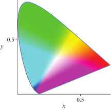图 4.20: \( xy \) 色度图。 所有有效颜色均位于着色区域内。
xyY 色彩空间将颜色的色度与亮度分开。它使用 \( x \) 和 \( y \) 色坐标和来自 XYZ 的 \( y_\lambda \)，因为 \( Y(\lambda) \) 匹配曲线被定义为与亮度成比例。 pbrt 对 xyY 颜色的使用有限，因此没有提供表示它们的类，但 XYZ 类提供了一个方法，该方法返回其 Point2f 类型的 \( xy \) 色坐标。
/** XYZ 公有方法 */
Point2f xy() const {
return Point2f(X / (X + Y + Z), Y / (X + Y + Z));
}
还有一个相应的方法将 xyY 转换为 XYZ，通过给定 \( xy \) 和可选的 \( y_\lambda \) 坐标。
/** XYZ 公有方法 */
static XYZ FromxyY(Point2f xy, Float Y = 1) {
if (xy.y == 0)
return XYZ(0, 0, 0);
return XYZ(xy.x * Y / xy.y, Y, (1 - xy.x - xy.y) * Y / xy.y);
}
4.6.2 RGB 颜色（RGB Color ）
RGB 颜色在渲染应用中比 XYZ 更常用。在 RGB 色彩空间中，颜色由对应于红、绿、蓝的三元组值表示，通常称为 RGB。然而，RGB 三元组本身是没有意义的；它必须相对于特定的 RGB 色彩空间进行定义。
要了解其中的原因，可以考虑当 RGB 颜色在显示器上显示时会发生什么：显示的光谱是由三条光谱发射曲线的加权和给出的，每条曲线分别对应红色、绿色和蓝色，这些是由显示元件（无论是荧光粉、LED 或 LCD 元件，还是等离子体单元）发出的。†（诚然，这个模型是一种简化，因为它忽略了显示设备可能进行的任何额外处理；特别是，许多显示设备会对显示的数值进行非线性重新映射。这个话题将在 B.5.6 节中讨论。）图 4.21 绘制了 LCD 显示器和 LED 显示器发出的红、绿、蓝分布；请注意，它们有显著的不同。图 4.22 则显示了在这些显示器上显示 RGB 颜色 \( (0.6,0.3,0.2) \) 所产生的光谱分布。不出所料，光谱的结果也相当不同。
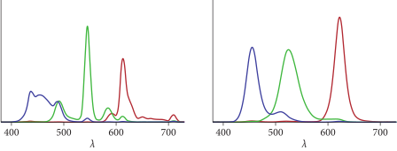图 4.21：LCD 显示器和 LED 显示器的红、绿、蓝发射曲线。 第一个图显示了 LCD 显示器的曲线，第二个图显示了 LED 的曲线。这两种显示器的发射特性截然不同。（数据由 X-Rite 公司提供。）
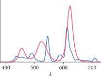图 4.22：在 LED（红色）和 LCD（蓝色）显示器上显示 RGB 颜色 \( (0.6,0.3,0.2) \) 的光谱分布。 由于图 4.21 中所示的不同发射曲线，即使 RGB 值相同，所产生的发射分布也显著不同。
如果已知显示器的 \( R(\lambda) \)、 \( G(\lambda) \) 和 \( B(\lambda) \) 曲线，该显示器上显示光谱分布 \( S(\lambda) \) 的 RGB 系数可以通过将 \( S(\lambda) \) 与每条曲线进行积分求出：
\[ r = \int R(\lambda)\ S(\lambda)\ \text{d}\lambda \]
以此类推。在上一节中用于计算光谱的 XYZ 值的方法也可以用于计算这些积分的值。
或者，如果我们已经拥有 \( S(\lambda) \) 的 \( (x_\lambda,y_\lambda,z_\lambda) \) 表示，可以直接将 XYZ 系数转换为相应的 RGB 系数。例如，考虑计算光谱分布 \( S(\lambda) \) 的红色分量的值：
\[ \begin{align} r &= \int R(\lambda)\ S(\lambda)\ \text{d}\lambda \\ &\approx \int R(\lambda)(x_\lambda X(\lambda) + y_\lambda Y(\lambda) + z_\lambda Z(\lambda))\ \text{d}\lambda \\ &= x_\lambda \int R(\lambda)\ X(\lambda)\ \text{d}\lambda + y_\lambda \int R(\lambda)\ Y(\lambda)\ \text{d}\lambda + z_\lambda \int R(\lambda)\ Z(\lambda)\ \text{d}\lambda \end{align} \]
其中第二步利用了色彩感知的三刺激理论。
RGB 响应函数和 XYZ 匹配函数的乘积的积分可以针对给定的响应曲线进行预计算，从而使得可以将完整的转换表示为一个矩阵：
\[ \begin{bmatrix} r \\ g \\ b \end{bmatrix} = \left( \begin{matrix} {\int R(\lambda)\ X(\lambda)\ \text{d}\lambda} & {\int R(\lambda)\ Y(\lambda)\ \text{d}\lambda} & {\int R(\lambda)\ Z(\lambda)\ \text{d}\lambda} \\ {\int G(\lambda)\ X(\lambda)\ \text{d}\lambda} & {\int G(\lambda)\ Y(\lambda)\ \text{d}\lambda} & {\int G(\lambda)\ Z(\lambda)\ \text{d}\lambda} \\ {\int B(\lambda)\ X(\lambda)\ \text{d}\lambda} & {\int B(\lambda)\ Y(\lambda)\ \text{d}\lambda} & {\int B(\lambda)\ Z(\lambda)\ \text{d}\lambda} \end{matrix} \right) \begin{bmatrix} x_\lambda \\ y_\lambda \\ z_\lambda \end{bmatrix} \]
pbrt 频繁使用这种方法，以便高效地将颜色从一个色彩空间转换到另一个。
pbrt 也提供了一个易懂的 RGB 类，并提供多种有用的算术运算（文本中未包含）。
/** RGB 定义 */
class RGB {
public:
/** RGB 公有方法 */
RGB(Float r, Float g, Float b) : r(r), g(g), b(b) {}
PBRT_CPU_GPU
RGB &operator+=(RGB s) {
r += s.r;
g += s.g;
b += s.b;
return *this;
}
PBRT_CPU_GPU
RGB operator+(RGB s) const {
RGB ret = *this;
return ret += s;
}
PBRT_CPU_GPU
RGB &operator-=(RGB s) {
r -= s.r;
g -= s.g;
b -= s.b;
return *this;
}
PBRT_CPU_GPU
RGB operator-(RGB s) const {
RGB ret = *this;
return ret -= s;
}
PBRT_CPU_GPU
friend RGB operator-(Float a, RGB s) { return {a - s.r, a - s.g, a - s.b}; }
PBRT_CPU_GPU
RGB &operator*=(RGB s) {
r *= s.r;
g *= s.g;
b *= s.b;
return *this;
}
PBRT_CPU_GPU
RGB operator*(RGB s) const {
RGB ret = *this;
return ret *= s;
}
PBRT_CPU_GPU
RGB operator*(Float a) const {
DCHECK(!IsNaN(a));
return {a * r, a * g, a * b};
}
PBRT_CPU_GPU
RGB &operator*=(Float a) {
DCHECK(!IsNaN(a));
r *= a;
g *= a;
b *= a;
return *this;
}
PBRT_CPU_GPU
friend RGB operator*(Float a, RGB s) { return s * a; }
PBRT_CPU_GPU
RGB &operator/=(RGB s) {
r /= s.r;
g /= s.g;
b /= s.b;
return *this;
}
PBRT_CPU_GPU
RGB operator/(RGB s) const {
RGB ret = *this;
return ret /= s;
}
PBRT_CPU_GPU
RGB &operator/=(Float a) {
DCHECK(!IsNaN(a));
DCHECK_NE(a, 0);
r /= a;
g /= a;
b /= a;
return *this;
}
PBRT_CPU_GPU
RGB operator/(Float a) const {
RGB ret = *this;
return ret /= a;
}
PBRT_CPU_GPU
RGB operator-() const { return {-r, -g, -b}; }
PBRT_CPU_GPU
Float Average() const { return (r + g + b) / 3; }
PBRT_CPU_GPU
bool operator==(RGB s) const { return r == s.r && g == s.g && b == s.b; }
PBRT_CPU_GPU
bool operator!=(RGB s) const { return r != s.r || g != s.g || b != s.b; }
PBRT_CPU_GPU
Float operator[](int c) const {
DCHECK(c >= 0 && c < 3);
if (c == 0)
return r;
else if (c == 1)
return g;
return b;
}
PBRT_CPU_GPU
Float &operator[](int c) {
DCHECK(c >= 0 && c < 3);
if (c == 0)
return r;
else if (c == 1)
return g;
return b;
}
std::string ToString() const;
/** RBG 公有成员 */
Float r = 0, g = 0, b = 0;
};
/** RBG 公有方法 */
RGB(Float r, Float g, Float b) : r(r), g(g), b(b) {}
/** RBG 公有成员 */
Float r = 0, g = 0, b = 0;
4.6.3 RGB 色彩空间（RGB Color Spaces）
完整的光谱响应曲线并不是定义色彩空间所必需的。例如，可以使用 \( xy \) 色坐标来定义一个色彩空间，以指定三 原色（color primaries）。从三原色，可以推导出将 XYZ 颜色转换到该色彩空间及逆转换的矩阵。在不需要明确的光谱响应曲线的情况下，这是一种方便的定义色彩空间的方法。
RGBColorSpace 类在文件 util/colorspace.h 和 util/colorspace.cpp 中定义，它采用了上述方法来封装 RGB 色彩空间的表示以及多种有用的操作，例如将 XYZ 颜色转换到其色彩空间及逆转换。
/** RGBColorSpace 定义 */
class RGBColorSpace {
public:
/** RGBColorSpace 公有方法 */
RGBColorSpace(Point2f r, Point2f g, Point2f b, Spectrum illuminant,
const RGBToSpectrumTable *rgbToSpectrumTable, Allocator alloc);
PBRT_CPU_GPU
RGBSigmoidPolynomial ToRGBCoeffs(RGB rgb) const;
static void Init(Allocator alloc);
/** RGBColorSpace 公有成员 */
Point2f r, g, b, w;
DenselySampledSpectrum illuminant;
SquareMatrix<3> XYZFromRGB, RGBFromXYZ;
static const RGBColorSpace *sRGB, *DCI_P3, *Rec2020, *ACES2065_1;
PBRT_CPU_GPU
bool operator==(const RGBColorSpace &cs) const {
return (r == cs.r && g == cs.g && b == cs.b && w == cs.w &&
rgbToSpectrumTable == cs.rgbToSpectrumTable);
}
PBRT_CPU_GPU
bool operator!=(const RGBColorSpace &cs) const {
return (r != cs.r || g != cs.g || b != cs.b || w != cs.w ||
rgbToSpectrumTable != cs.rgbToSpectrumTable);
}
std::string ToString() const;
RGB LuminanceVector() const {
return RGB(XYZFromRGB[1][0], XYZFromRGB[1][1], XYZFromRGB[1][2]);
}
RGB ToRGB(XYZ xyz) const { return Mul<RGB>(RGBFromXYZ, xyz); }
XYZ ToXYZ(RGB rgb) const { return Mul<XYZ>(XYZFromRGB, rgb); }
static const RGBColorSpace *GetNamed(std::string name);
static const RGBColorSpace *Lookup(Point2f r, Point2f g, Point2f b,
Point2f w);
private:
/** RGBColorSpace 私有成员 */
const RGBToSpectrumTable *rgbToSpectrumTable;
};
RGB 色彩空间是通过红、绿、蓝原色的色度来定义的。原色定义了色彩空间的色域（gamut），即它可以用 0 到 1 之间的 RGB 值来表示颜色集合。对于三原色，色域在色度图上形成一个三角形，每个原色的色度定义了三角形的一个顶点。†（一些显示器使用超过三种原色来增加色域范围，不过在此我们将假设使用传统的 RGB。）
除了原色外，还需要指定色彩空间的 白点（whitepoint），即当所有三原色都激活到最大发射量时所显示的颜色。这可能令人惊讶——毕竟，白色不应该对应于每个波长都具有相同值的光谱分布吗？然而，白色是一种颜色，作为一种颜色，它在人类 感知（perceive ） 上是统一的，并被贴上 “白色” 的标签。白色的光谱在对应于蓝色和绿色的较低波长处往往具有更强的能量，而在对应于橙色和红色的较高波长处则较弱。如第 4.4.2 节所描述并在图 4.14 中绘制的 D65 光源，是指定色彩空间白点的常见选择。
虽然白点的色度足以定义一个色彩空间，但 RGBColorSpace 构造函数接受其完整的光谱分布，这对于即将到来的将颜色转换为光谱分布的代码非常有用。存储光源光谱使渲染器的用户能够使用 RGB 颜色指定光源的发射；提供的光源则为 RGB 白色 \( (1,1,1) \) 提供光谱分布。
/** RGBColorSpace 方法定义 */
RGBColorSpace::RGBColorSpace(Point2f r, Point2f g, Point2f b,
Spectrum illuminant, const RGBToSpectrumTable *rgbToSpec,
Allocator alloc)
: r(r), g(g), b(b), illuminant(illuminant, alloc),
rgbToSpectrumTable(rgbToSpec) {
/** 计算白点原色和 XYZ 坐标 */
XYZ W = SpectrumToXYZ(illuminant);
w = W.xy();
XYZ R = XYZ::FromxyY(r), G = XYZ::FromxyY(g), B = XYZ::FromxyY(b);
/** 初始化 XYZ 色彩空间变换矩阵 */
SquareMatrix<3> rgb(R.X, G.X, B.X,
R.Y, G.Y, B.Y,
R.Z, G.Z, B.Z);
XYZ C = InvertOrExit(rgb) * W;
XYZFromRGB = rgb * SquareMatrix<3>::Diag(C[0], C[1], C[2]);
RGBFromXYZ = InvertOrExit(XYZFromRGB);
}
RGBColorSpace 使用 DenselySampledSpectrum 作为光源的表示，以便通过波长进行高效查找。
/** RGBColorSpace 公有成员 */
Point2f r, g, b, w;
DenselySampledSpectrum illuminant;
RGBColorSpace 还存储一个指向 RGBToSpectrumTable 类的指针，该类存储与将色彩空间中的 RGB 值转换为完整光谱分布相关的信息；将在第 4.6.6 节中简要介绍。
/** RGBColorSpace 私有成员 */
const RGBToSpectrumTable *rgbToSpectrumTable;
要在色彩空间中求 RGB 值时，能够进行 XYZ 之间的转换是非常有用的。这可以通过 \( 3 \times 3 \) 矩阵来实现。为了计算它们，我们需要色度的 XYZ 坐标和白点。
/** 计算白点原色和 XYZ 坐标 */
XYZ W = SpectrumToXYZ(illuminant);
w = W.xy();
XYZ R = XYZ::FromxyY(r), G = XYZ::FromxyY(g), B = XYZ::FromxyY(b);
我们将首先推导出将色彩空间中的 RGB 系数转换为 XYZ 的矩阵 \( M \) ：
\[ \begin{bmatrix} x_\lambda \\ y_\lambda \\ z_\lambda \end{bmatrix} = M \begin{bmatrix} r \\ g \\ b \end{bmatrix} \]
这个矩阵可以通过考虑 RGB 三元组 \( (1,1,1) \) 与 XYZ 坐标系中的白点之间的关系来求出，可以在 W 中获得这个白点。在这种情况下，我们知道 \( w_{x_\lambda} \) 必须与红、绿、蓝原色的 \( x_\lambda \) 坐标之和成比例，因为我们考虑的是 \( (1,1,1) \) RGB 的情况。对于 \( y_\lambda \) 和 \( z_\lambda \) 也是如此。这个关系可以表示为
\[ \begin{bmatrix} w_{x_\lambda} \\ w_{y_\lambda} \\ w_{z_\lambda} \end{bmatrix} = \left( \begin{matrix} {r_{x_\lambda}} & {g_{x_\lambda}} & {b_{x_\lambda}} \\ {r_{y_\lambda}} & {g_{y_\lambda}} & {b_{y_\lambda}} \\ {r_{z_\lambda}} & {g_{z_\lambda}} & {b_{z_\lambda}} \end{matrix} \right) \left( \begin{matrix} {c_r} & {0} & {0} \\ {0} & {c_g} & {0} \\ {0} & {0} & {c_b} \end{matrix} \right) \begin{bmatrix} 1 \\ 1 \\ 1 \end{bmatrix} = \left( \begin{matrix} {r_{x_\lambda}} & {g_{x_\lambda}} & {b_{x_\lambda}} \\ {r_{y_\lambda}} & {g_{y_\lambda}} & {b_{y_\lambda}} \\ {r_{z_\lambda}} & {g_{z_\lambda}} & {b_{z_\lambda}} \end{matrix} \right) \begin{bmatrix} c_r \\ c_g \\ c_b \end{bmatrix} \]
其仅包含未知数 \( c_r \)、 \( c_g \) 和 \( c_b \)。这些可以通过将白点 XYZ 坐标乘以剩余矩阵的逆来找到。反转该矩阵后，得到从 XYZ 到 RGB 的变换矩阵。
/** 初始化 XYZ 色彩空间变换矩阵 */
SquareMatrix<3> rgb(R.X, G.X, B.X,
R.Y, G.Y, B.Y,
R.Z, G.Z, B.Z);
XYZ C = InvertOrExit(rgb) * W;
XYZFromRGB = rgb * SquareMatrix<3>::Diag(C[0], C[1], C[2]);
RGBFromXYZ = InvertOrExit(XYZFromRGB);
/** RGBColorSpace 公有成员 */
SquareMatrix<3> XYZFromRGB, RGBFromXYZ;
给定一个色彩空间的 XYZ/RGB 转换矩阵，矩阵与向量的乘法足以将任何 XYZ 三元组转换到该色彩空间，和将该色彩空间中的任何 RGB 转换为 XYZ。
/** RGBColorSpace 公有方法 */
RGB ToRGB(XYZ xyz) const { return Mul<RGB>(RGBFromXYZ, xyz); }
XYZ ToXYZ(RGB rgb) const { return Mul<XYZ>(XYZFromRGB, rgb); }
此外，通过使用这些矩阵和 XYZ 颜色的方法，计算从一种色彩空间转换到另一种的矩阵是很简单的。
/** RGBColorSpace 方法定义 */
SquareMatrix<3> ConvertRGBColorSpace(const RGBColorSpace &from,
const RGBColorSpace &to) {
if (from == to) return {};
return to.RGBFromXYZ * from.XYZFromRGB;
}
SampledSpectrum 提供了一种便捷的方法，可以通过 XYZ 在给定的色彩空间中转换为 RGB。
/** Spectrum 方法定义 */
RGB SampledSpectrum::ToRGB(const SampledWavelengths &lambda,
const RGBColorSpace &cs) const {
XYZ xyz = ToXYZ(lambda);
return cs.ToRGB(xyz);
}
标准色彩空间（Standard Color Spaces）
pbrt 内置支持许多广泛使用的标准色彩空间。 其中包括
- sRGB 是在 1990 年代开发的，并在许多年里广泛用于显示器。其开发的一个初衷是为了实现网络色彩的标准化。
- DCI-P3 是为数字电影放映而开发的，覆盖的色域比 sRGB 更广。撰写时，它正越来越多地被用于计算机显示器和手机。
- Rec2020，涵盖了更广泛的范围，并被用于 UHDTV 电视标准。
- ACES2065-1 的原色超出了可表示颜色的范围，并且其位置设置使得所有颜色都可以由其表示。选择它的一个原因是它适合作为长期档案存储的格式
每个的色域如图 4.23 所示。
图 4.23： sRGB、DCI-P3、Rec2020 和 ACES2065-1 色彩空间的色域，通过色度图进行可视化。sRGB 覆盖的色域最小，DCI-P3 次之，Rec2020 则更大。ACES2065-1 对应于大三角形，其特点是使用对应于虚色的原色。通过这样做，它能够表示所有有效颜色，与其他色彩空间不同。
RGBColorSpace 类为每个这些提供了预先初始化的 RGBColorSpace 类实例。
/** RGBColorSpace 公有成员 */
static const RGBColorSpace *sRGB, *DCI_P3, *Rec2020, *ACES2065_1;
也可以通过名称查找色彩空间，或通过指定原色的色度和白点来查找。
/** RGBColorSpace 公有方法 */
static const RGBColorSpace *GetNamed(std::string name);
static const RGBColorSpace *Lookup(Point2f r, Point2f g, Point2f b,
Point2f w);
4.6.4 为什么选择光谱渲染？（Why Spectral Rendering?）
到目前为止，我们在描述 pbrt 的实现时一直认为它使用点采样光谱来表示光谱量。虽然考虑到 pbrt 的物理基础和蒙特卡罗积分的普遍采用，这似乎是自然的，但它与当前在渲染中使用 RGB 颜色进行光谱计算的普遍做法并不相符。我们在本节开始时暗示了这种做法的一个重大问题；在引入 RGB 色彩空间后，我们现在可以更深入地探讨。
如前所述，由于色彩空间是向量空间，在同一色彩空间中两个颜色的相加会得到与将底层光谱相加后再找到结果光谱的颜色相同的颜色。但乘法则不是这样。为了理解这个问题，假设我们正在渲染一个均匀着色的物体（例如，绿色），该物体均匀地被同色的光照射。为简单起见，假设照明和物体的反射值都用 RGB 颜色 \( (0,1,0) \) 表示。散射光则由反射率和入射照明的乘积给出：
\[ \left( \begin{matrix} 0 \\ 1 \\ 0 \end{matrix} \right) \odot \left( \begin{matrix} 0 \\ 1 \\ 0 \end{matrix} \right) = \left( \begin{matrix} 0 \\ 1 \\ 0 \end{matrix} \right) \]
RGB 颜色的逐分量乘法用 “\( \odot \)” 运算符表示。
在 sRGB 色彩空间中，绿色 \( (0,1,0) \) 映射到可表示颜色的色域的上顶点（图 4.24），并且这个 RGB 颜色值在乘法运算后保持不变。
现在假设我们切换到广色域色彩空间 ACES2065-1。在这个色彩空间中，sRGB 颜色 \( (0,1,0) \) 可以被求出为色彩空间中的 \( (0.38,0.82,0.12) \) ——因此它映射到可表示颜色集合的内部位置。进行相同的分量乘法得到的结果是：
\[ \left( \begin{matrix} 0.38 \\ 0.82 \\ 0.12 \end{matrix} \right) \odot \left( \begin{matrix} 0.38 \\ 0.82 \\ 0.12 \end{matrix} \right) = \left( \begin{matrix} 0.14 \\ 0.67 \\ 0.01 \end{matrix} \right) \]
这次，得到的颜色强度低于起始值，并且由于绿色光相对比例的增加，饱和度也变得更高。这导致了图 4.24 中所示的有些奇怪的情况：在这个新的色彩空间中，分量乘法不仅产生了不同的颜色——它还严重增加了饱和度，以至于颜色被推到了物理可实现颜色的 CIE 马蹄形状的外部！
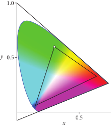图 4.24： 相同的颜色在不同形状的色域的 RGB 色彩空间中可以具有非常不同的 RGB 值。在 sRGB 颜色域（内三角形）中，绿原色 \( (0,1,0) \) 的色坐标为 \( (0.3, 0.6) \)（白点）。在广色域 ACES2065-1 色彩空间（外三角形）中，相同颜色的 RGB 值为 \( (0.38,0.82,0.12) \)。
在渲染的上下文中，光谱值相乘的能力对于评估材质与光源的相互作用至关重要。同时，这个例子展示了使用 RGB 值进行此目的时的问题：乘法运算在某种意义上是任意的（arbitrary），因为其行为在很大程度上依赖于所选择的色彩空间。因此，即使在最终希望得到 RGB 输出的情况下，使用光谱模型进行渲染也是更可取的，正如 pbrt 的情况所示。
使用光谱表示进行渲染的额外好处在于：可以轻松地对色散（dispersion）进行建模，并且先进的反射率模型通常与波长有自然的依赖关系，可以解释薄层中的彩虹色（iridescence）或表面微结构的衍射（diffraction）。
4.6.5 选择波长样本的数量（Choosing the Number of Wavelength Samples）
尽管它使用光传输模拟的光谱模型， pbrt 的输出通常是以三刺激颜色（如 RGB）表示的图像。我们已经描述了这些颜色是如何计算的——即光谱与匹配函数的乘积的蒙特卡罗估计，形式如方程 (4.23)——我们将简要回到关于 SampledSpectrum 类使用多少光谱样本的问题。相关的蒙特卡罗估计器易于评估，但其中的误差会导致图像中的 颜色噪声（color noise）。图 4.25 显示了这一现象的一个例子。

图 4.25: (a) 示例场景的参考图像。 (b) 如果场景仅使用每个像素一个图像样本进行渲染，每个样本仅采样一个波长，则像素的 RGB 颜色在蒙特卡罗估计中会出现大量误差方差。 (c) 使用四个波长样本（ pbrt 的默认值）时，这种方差显著减少，尽管颜色噪声仍然明显。在实际应用中，四个波长样本通常是足够的，因为每个像素通常会采集多个图像样本。（模型由 Yasutoshi Mori 提供。）
图 4.25(a)显示了一个由点光源照明的场景，其中仅包含来自光源的直接照明。在这个简单的环境中，散射光的蒙特卡罗估计在所有波长下的方差为零，因此蒙特卡罗误差的唯一来源是颜色匹配函数的积分。每个像素只有一条光线路径，并且每条光线跟踪一个单一波长，因此图像相当嘈杂，如图 4.25(b)所示。直观上，这种情况下的挑战可以理解为渲染器试图在每个像素处估计三个值——红色、绿色和蓝色——而这些值都是基于单一波长的光谱值。
增加像素样本的数量可以减少这种误差（只要它们采样不同的波长），尽管将多个波长样本与每条光线关联更为有效。光线在场景中传播的路径通常与波长无关，而在多个波长下计算光照的增量成本通常相对于寻找光线交点和计算其他与波长无关的量的成本来说是较小的。（考虑每条光线的多个波长可以视为第 2.2.5 节中描述的蒙特卡罗分裂技术的应用。）图 4.25(c)显示了将四个波长与每条光线关联所带来的改进；颜色噪声显著减少。
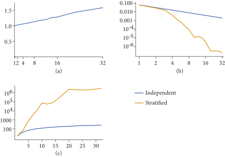图 4.26：（a）渲染图 4.25 中场景的时间与波长样本数量的关系图，已归一化为渲染一个波长样本的时间。（b）独立样本和分层样本的波长样本数量与均方误差的关系。（c）分层波长样本数量与蒙特卡罗效率的关系。这些结果表明，至少 32 个波长样本是最佳的。
然而，计算从每条光线发出的大量波长的散射会影响效率，因为计算光谱量所需的计算也增加了。为了研究这种权衡，我们使用不同数量的波长样本渲染了图 4.25 中的场景，既包括独立采样的波长，也包括分层采样的波长。（对于两者，波长都是在 360–830 纳米范围内均匀采样的。†（在 5.4.2 节，我们会看到对波长进行非均匀采样更好，但此处为了简便仍使用均匀采样。））图 4.26 显示了结果。
图 4.26(a)显示，对于这个场景，使用 32 个波长样本的渲染所需时间几乎比使用单个波长样本多 1.6 倍。 （独立采样和分层采样的渲染性能实际上是相同的。）然而，如图 4.26(b)所示，更多波长样本的好处是显著的。在那个对数–对数图（log–log plot）中，我们可以看到，使用独立样本时，均方误差以 \( O(1/n) \) 的速率下降，这与方差随着样本增多而下降的速率一致。分层采样表现得非常出色，不仅提供了数量级更低的误差，而且渐进收敛到速率也更快。
图 4.26(c)绘制了两种方法的蒙特卡罗效率（注意，\( y \) 轴采用对数刻度）。结果似乎很明确；32 个分层波长样本的效率比一个样本高出超过一百万倍，并且曲线尚未平稳。为什么在 32 个样本时停止测量，为什么 pbrt 的 NSpectrumSamples 参数默认只有四个波长样本？

图 4.27：（a）一个更复杂的场景，其中蒙特卡罗估计的方差来自波长采样以外的多种来源。（b）均方误差与分层波长样本数量的图表。额外波长样本的优势在六个样本之后有限。（c）蒙特卡罗效率与分层波长样本数量的关系图，归一化为一个波长样本时的效率。对于这个场景，八个样本是最佳的。
当前设置的主要原因有三个。首先，尽管图 4.26(a)显示从 8 到 32 个波长样本的误差几乎减少了 500 倍，但这两幅图像几乎无法区分——由于显示技术和人类视觉系统的限制，误差的差异是无关紧要的。其次，场景通常是通过每个像素中的多个光线路径进行渲染，以减少其他蒙特卡罗估计带来的误差。随着使用更少波长采集更多像素样本，贡献给每个像素值的波长总数也随之增加。
最后，也是最重要的，其他来源的蒙特卡罗误差往往对整体误差的贡献大于波长采样。图 4.27(a)展示了一个更复杂的场景，该场景的光照具有挑战性，使用蒙特卡罗进行采样。图 4.27(b)显示了均方误差与波长样本数量的关系图，图 4.27(c)展示了蒙特卡罗效率。显然，在八个波长样本之后，增加更多样本的增量成本并没有带来好处。
4.6.6 从 RGB 到光谱（From RGB to Spectra）
虽然将光谱转换为用于图像输出的 RGB 是一个明确规定的操作，但将 RGB 颜色转换为光谱分布则并非如此。这是一个重要的任务，因为渲染器的输入通常以 RGB 颜色的形式存在。目前 3D 建模工具中创作的场景通常使用 RGB 参数和纹理来指定物体的反射属性和光源的发射。在光谱渲染器中，这些 RGB 值必须以某种方式转换为等效的颜色光谱，但不幸的是，由于存在同色异谱现象，任何这样的转换本质上都是模糊的。如果问题定义得如此不清晰，我们又如何期望找到合理的解决方案呢？从另一方面看，这种模糊性也有积极意义：它为包含简单高效技术的可能答案留下了广阔的空间。
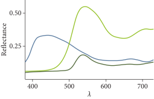图 4.28： 几种色彩校正补丁（color checker patches）的光谱反射率。每条曲线用对应的 RGB 颜色进行着色。
使这项任务更加复杂的是，我们必须考虑三种完全不同的光谱分布类型：
- 光源光谱（Illuminant spectra），指定了光源发射特征的光谱依赖性。这些光谱是非负且无界的；其形状从平滑（白炽灯光源、LED）到极其尖锐（激光中的受激发射或氙弧灯和荧光灯中的气体放电）不等。
- 反射光谱（Reflectance spectra），描述了从吸收表面的反射。反射光谱保持每个波长上的能量守恒，这意味着数值不能超出 \( 0,1[] \) 范围。它们通常在可见波长范围内是平滑的函数。 †（请注意，这一观察并非总是成立：在紫外线和红外线波长范围内，吸收带会导致反射光谱中出现明显的尖峰。此外，诸如虹彩效应等波动光学效应会产生振荡的光谱变化。这些行为可能需要使用专门的转换技术来处理，这超出了本文讨论的简单方法的范围。）（图 4.28 显示了来自色彩校正的几个反射光谱示例。）
- 无界光谱（Unbounded spectra），是非负且无界的，但不描述发射。常见的例子包括随光谱变化的折射率和用于描述介质散射特性的系数。
本节首先提出了一种将 RGB 颜色值（各分量在 0 到 1 之间）转换为相应反射光谱的方法，随后推广到无界光谱和光源光谱。该转换利用了问题的模糊性，来实现以下目标：
- 一致性（Identity）：如果一个 RGB 值被转换为光谱，那么将该光谱转换回 RGB 应该得到相同的 RGB 系数。
- 平滑性（Smoothness）：受到关于现实世界反射光谱的早期观察的启发，输出光谱应尽可能平滑。另一种平滑性也很重要：输入 RGB 颜色的微小变化应导致输出光谱相应的小变化。 由于不连续性会在不同光源下观察纹理对象时产生可见的缝隙，因此不连续性不是我们想要的。
- 能量守恒（Energy conservation）：给定在 \( [0,1] \) 内的 RGB 值，对应的光谱分布也应在 \( [0,1] \) 内。
尽管现实世界中的反射光谱形状多种多样，但它们通常可以用常量（白色、黑色）、近似线性或具有单峰（绿色、黄色）或双峰（蓝紫色）的峰值曲线来很好地近似。
这里选择的方法尝试使用一个函数族来表示这些光谱，该函数族旨在简单、平滑，并且在运行时高效评估，同时提供足够的自由度以精确再现任意的 RGB 颜色值。
多项式通常是此类构造中的标准构件；实际上，二次多项式可以表示常量和线性曲线，以及在波长范围的中间或端点处达到峰值的曲线。然而，它们缺乏能量守恒性，这一问题我们通过使用 sigmoid 函数来解决：
\[
s(x) = \frac{1}{2} + \frac{x}{2\sqrt{1+x^2}}
\]
该函数如图 4.29 所示，是严格单调的，并在 \( x \rightarrow \mp \infty \) 时平滑地趋近于端点 \( 0 \) 和 \( 1 \) 。
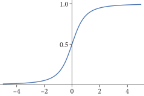图 4.29：S 形曲线（Sigmoid curve）。 术语 sigmoid 指的是将所有输入映射到一个有限输出区间的光滑 S 形曲线。这里使用的特定类型的 sigmoid 是通过代数函数定义的，从而在运行时实现高效评估。
我们将这个 sigmoid 应用于由三个系数 \( c_i \) 定义的二次多项式，将其定义域压扁到区间 \( [0,1] \) 以确保能量守恒。
\[
S(\lambda) = s(c_0 \lambda^2 + c_1 \lambda + c_2)
\]
使用这种表示法来表示理想的吸收和反射光谱（即 \( S(\lambda) = 0 \) 或 \( 1 \) ）有些尴尬，因为多项式必须评估为正无穷或负无穷才能达到这两个极限。这又导致了方程 (4.25) 中出现形如 \( \pm \infty / \infty \) 的分数，而在 IEEE-754 算术中，这将计算为一个非数值（NaN）。我们需要单独处理这种极限情况。
我们首先定义一个类，该类封装系数 \( c_i \) 并评估方程（4.26）。
/** RGBSigmoidPolynomial 定义 */
class RGBSigmoidPolynomial {
public:
/** RGBSigmoidPolynomial 公有方法 */
RGBSigmoidPolynomial(Float c0, Float c1, Float c2)
: c0(c0), c1(c1), c2(c2) {}
Float operator()(Float lambda) const {
return s(EvaluatePolynomial(lambda, c2, c1, c0));
}
Float MaxValue() const {
Float result = std::max((*this)(360), (*this)(830));
Float lambda = -c1 / (2 * c0);
if (lambda >= 360 && lambda <= 830)
result = std::max(result, (*this)(lambda));
return result;
}
private:
/** RGBSigmoidPolynomial 私有方法 */
static Float s(Float x) {
if (IsInf(x)) return x > 0 ? 1 : 0;
return .5f + x / (2 * std::sqrt(1 + Sqr(x)));
};
/** RGBSigmoidPolynomial 私有成员 */
Float c0, c1, c2;
};
它具有预期的构造函数和成员变量。
/** RGBSigmoidPolynomial 公有方法 */
RGBSigmoidPolynomial(Float c0, Float c1, Float c2)
: c0(c0), c1(c1), c2(c2) {}
/** RGBSigmoidPolynomial 私有成员 */
Float c0, c1, c2;
给定系数值，在指定波长下评估光谱函数是很容易的。
/** RGBSigmoidPolynomial 公有方法 */
Float operator()(Float lambda) const {
return s(EvaluatePolynomial(lambda, c2, c1, c0));
}
sigmoid 函数遵循先前的定义，并添加了一个特殊情况来处理正无穷和负无穷。
/** RGBSigmoidPolynomial 私有方法 */
static Float s(Float x) {
if (IsInf(x)) return x > 0 ? 1 : 0;
return .5f + x / (2 * std::sqrt(1 + Sqr(x)));
};
MaxValue() 方法返回可见波长范围 360–830 nm 内光谱分布的最大值。由于 sigmoid 函数是单调递增的，因此该问题简化为定位方程 (4.25) 中二次多项式的最大值并在该处评估模型。
通过将多项式的导数设为零并求解波长 lambda，我们可以保守地用刚求出的极值来检查区间的端点。如果该值恰好是局部最小值，则将被忽略。
/** RGBSigmoidPolynomial 公有方法 */
Float MaxValue() const {
Float result = std::max((*this)(360), (*this)(830));
Float lambda = -c1 / (2 * c0);
if (lambda >= 360 && lambda <= 830)
result = std::max(result, (*this)(lambda));
return result;
}
我们现在转向 RGBSigmoidPolynomial 的后半部分，即为给定 RGB 颜色确定合适系数 \( c_0、c_1、c_2 \) 的计算。这一步依赖于色彩原色（color primaries）的光谱发射曲线，并且通常没有显式解。我们将其表述为一个优化问题，通过计算正向和反向转换后输入和输出 RGB 值之间的差异，最小化往返误差（round-trip error）（即上述提到的 一致性 目标）。精确的优化目标是
\[ (c_0^*,c_1^*,c_2^*) = \operatorname*{argmin}_{c_0,c_1,c_2} \left\Vert \begin{bmatrix} r \\ g \\ b \end{bmatrix} - \int \begin{bmatrix} R(\lambda) \\ G(\lambda) \\ B(\lambda) \end{bmatrix} S(\lambda,c_0,c_1,c_2)\ W(\lambda)\ \text{d}\lambda\ \right\Vert \]
其中 \( R(\lambda)、G(\lambda)、B(\lambda) \) 描述了色彩原色的发射曲线，\( W(\lambda) \) 代表白点（例如，图 4.14 中显示的 sRGB 色彩空间中的 D65）。在这个优化问题中包含白点，确保了单色的 RGB 值能够映射到均匀的反射光谱。
在像 sRGB 这样相对紧凑的色域空间中，无论用什么方法来量化颜色距离，这种优化都可以实现零误差。在更大的色彩空间中，特别是那些包含虚色的色彩空间，如 ACES2065-1，显然无法实现零往返误差，因此范数 \( \Vert\cdot\Vert \) 的选择变得相关。原则上，我们可以简单地使用 2范数（2-norm）——然而，这种基本选择的问题在于它并不是视觉上均匀（perceptually uniform）的：给定量的误差是否可见取决于其在 RGB 立方中的位置。我们改为使用 CIE76 \( \Delta E \)，它首先将两种颜色转换到名为 CIELAB 的色彩空间，然后再评估 \( L_2 \)-距离。
我们然后使用高斯-牛顿算法求解这个优化问题，这是一种牛顿法的近似形式。这个优化过程大约需要几微秒，如果在每次 RGB 值必须转换为光谱时都要执行（例如，对于高分辨率纹理的每个像素执行一次），将会导致效率低下。
为了避免这种低效，我们在 pbrt 首次编译时预计算了涵盖 \( [0,1]^3 \) RGB 颜色立方的系数表。值得注意的是，原则上也可以在较低维度的二维色度空间中进行表格化：例如，表示最大饱和度颜色红色 \( (1,0,0) \) 的计算光谱可以简单地缩放来再现较少饱和的 RGB 颜色 \( (c,0,0) \)，其中 \( c \in (0,1) \)。然而，饱和度较高的颜色的光谱必须在一个狭小的波长范围内达到峰值以实现这种饱和度，而饱和度较低的颜色可以通过更平滑的光谱来表示。由于在物理现实中遇到的反射光谱的固有平滑性，这通常是可行时的更佳选择。
因此，我们为 pbrt 支持的每个 RGB 色彩空间（目前为 sRGB、DCI-P3、Rec2020 和 ACES2065-1）预先计算了的完整的 3D 表格。此优化步骤的实现包含在文件 cmd/rgb2spec_opt.cpp 中，因此我们在此不详细讨论；有关更多信息，请参见 “延伸阅读” 部分。图 4.30 显示了与一些 RGB 值对应的光谱图。
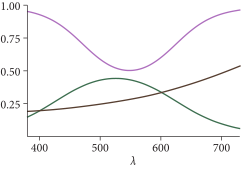图 4.30：从 RGB 值计算的光谱。 由 RGBSigmoidPolynomial 表示的 RGB 颜色 \( (0.7,0.5,0.8) \)（紫线）、 \( (0.25,0.44,0.33) \)（绿线）和 \( (0.36,0.275,0.21\)（棕线）的反射光谱图。每条线的用其对应的 RGB 颜色着色。
生成的表格存储在 pbrt 二进制文件中。在系统启动时，为每个 RGB 色彩空间创建一个 RGBToSpectrumTable 。
/** RGBToSpectrumTable 定义 */
class RGBToSpectrumTable {
public:
/** RGBToSpectrumTable 公有常量 */
static constexpr int res = 64;
using CoefficientArray = float[3][res][res][res][3];
/** RGBToSpectrumTable 公有方法 */
RGBToSpectrumTable(const float *zNodes, const CoefficientArray *coeffs)
: zNodes(zNodes), coeffs(coeffs) { }
PBRT_CPU_GPU
RGBSigmoidPolynomial operator()(RGB rgb) const;
static void Init(Allocator alloc);
static const RGBToSpectrumTable *sRGB;
static const RGBToSpectrumTable *DCI_P3;
static const RGBToSpectrumTable *Rec2020;
static const RGBToSpectrumTable *ACES2065_1;
std::string ToString() const;
private:
/** RGBToSpectrumTable 私有成员 */
const float *zNodes;
const CoefficientArray *coeffs;
};
RGBToSpectrumTable 的主要方法返回与给定 RGB 颜色对应的 RGBSigmoidPolynomial。
/** RGBToSpectrumTable 方法定义 */
RGBSigmoidPolynomial RGBToSpectrumTable::operator()(RGB rgb) const {
/** 处理统一的 rgb 值 */
if (rgb[0] == rgb[1] && rgb[1] == rgb[2])
return RGBSigmoidPolynomial(
0, 0, (rgb[0] - .5f) / std::sqrt(rgb[0] * (1 - rgb[0])));
/** 求出最大的分量并计算重新映射的分量值 */
int maxc = (rgb[0] > rgb[1]) ? ((rgb[0] > rgb[2]) ? 0 : 2) :
((rgb[1] > rgb[2]) ? 1 : 2);
float z = rgb[maxc];
float x = rgb[(maxc + 1) % 3] * (res - 1) / z;
float y = rgb[(maxc + 2) % 3] * (res - 1) / z;
/** 计算系数插值的整数索引和偏移量 */
int xi = std::min((int)x, res - 2), yi = std::min((int)y, res - 2),
zi = FindInterval(res, [&](int i) { return zNodes[i] < z; });
Float dx = x - xi, dy = y - yi,
dz = (z - zNodes[zi]) / (zNodes[zi + 1] - zNodes[zi]);
/** 三线性插值 sigmoid 多项式系数 c */
pstd::array<Float, 3> c;
for (int i = 0; i < 3; ++i) {
/** 定义查找 sigmoid 多项式系数的 co lambda函数 */
auto co = [&](int dx, int dy, int dz) {
return (*coeffs)[maxc][zi + dz][yi + dy][xi + dx][i];
};
c[i] = Lerp(dz, Lerp(dy, Lerp(dx, co(0, 0, 0), co(1, 0, 0)),
Lerp(dx, co(0, 1, 0), co(1, 1, 0))),
Lerp(dy, Lerp(dx, co(0, 0, 1), co(1, 0, 1)),
Lerp(dx, co(0, 1, 1), co(1, 1, 1))));
}
return RGBSigmoidPolynomial(c[0], c[1], c[2]);
}
如果三个 RGB 值相等，则确保返回的光谱完全恒定是有用的。（在某些情况下，如果使用系数表中的插值值，可能会出现轻微的颜色偏移。）如果方程（4.26）中 \( c_0 = c_1 = 0 \) ，并通过反转 sigmoid 函数求出适当的 \( c_2 \) 值，就会得到一个恒定的光谱。
/** 处理统一的 rgb 值 */
if (rgb[0] == rgb[1] && rgb[1] == rgb[2])
return RGBSigmoidPolynomial(
0, 0, (rgb[0] - .5f) / std::sqrt(rgb[0] * (1 - rgb[0])));
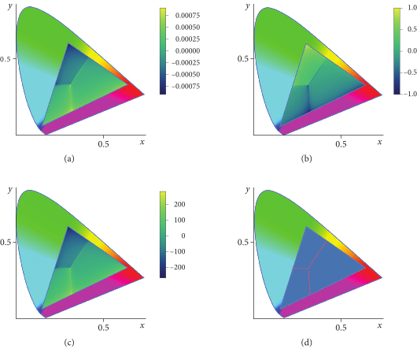图 4.31：光谱多项式系数 \( c_i \) 的图。 该图显示了在 sRGB 色彩空间中 \( xy \) 色度对应的多项式系数。 (a) \( c_0 \)、(b) \( c_1 \) 和 (c) \( c_2 \) 的变化大致平滑，尽管它们表现出急剧的过渡。 (d) 根据红色、绿色或蓝色的最大幅度对色域进行划分，与这些过渡密切相关；因此，这三个区域的系数被独立地制成表格。
优化得到的系数 \( c_i \) 通常是平滑变化的；RGB 的微小变化通常会导致其值的微小变化。（这一特性对于 平滑性 目标也非常有帮助。）然而，在 RGB 空间中有一些区域，其变化较快，这使得在这些区域直接进行三维表格化容易出错——见图 4.31(a)、(b)和(c)。一种更好的方法是根据红、绿、蓝 RGB 系数中哪个具有最大幅度，独立地进行表格化。这种划分很好地匹配了系数的不连续性，如图 4.31(d)所示。
在三个分区中的每一个分区内都存在一个三维表格化问题。我们将使用红色分量 \( r \) 具有最大幅度的分区来解释表格是如何索引的。对于给定的 \( (r,g,b) \)，第一步是计算一个重新归一化的坐标
\[
(x,y,z) = \left( \frac{g}{r}, \frac{b}{r}, r \right)
\]
（根据惯例，最大的分量总是映射到 \( z \)。）如果 \( g \) 或 \( b \) 是最大值，则应用类似的重新映射。通过这种映射，所有三个坐标覆盖范围 \( [0,1] \)，这使得在固定网格中更好地利用样本成为可能。
/** 求出最大的分量并计算重新映射的分量值 */
int maxc = (rgb[0] > rgb[1]) ? ((rgb[0] > rgb[2]) ? 0 : 2) :
((rgb[1] > rgb[2]) ? 1 : 2);
float z = rgb[maxc];
float x = rgb[(maxc + 1) % 3] * (res - 1) / z;
float y = rgb[(maxc + 2) % 3] * (res - 1) / z;
表格化的分辨率 res 在三个维度中是相同的。由于在这里它被设置为编译时常量，因此更改表的大小将需要重新编译 pbrt。
/** RGBToSpectrumTable 公有常量 */
static constexpr int res = 64;
在系数表中，\( x \) 和 \( y \) 坐标使用等间距离散化（equally spaced discretization），而 \( z \) 则通过非线性函数重新映射，该函数在 0 和 1 附近分配更多样本。 \( c_i \) 系数在该区域变化最快，因此这种重新映射更有效地分配了样本。
zNodes 数组（包含 res 个元素）存储重映射的结果，其中如果 \( f \) 是重映射函数，则 zNodes 的第 \( i \) 个元素存储 \( f(i/\text{res}) \)。
/** RGBToSpectrumTable 私有成员 */
const float *zNodes;
在表中求出整数坐标对于给定等间距离散化的 \( x \) 和 \( y \) 来说很简单。对于 \( z \)，需要通过 zNodes 进行二分查找。给定这些坐标后，随后求出它们的浮点偏移量以用于插值。
/** 计算系数插值的整数索引和偏移量 */
int xi = std::min((int)x, res - 2), yi = std::min((int)y, res - 2),
zi = FindInterval(res, [&](int i) { return zNodes[i] < z; });
Float dx = x - xi, dy = y - yi,
dz = (z - zNodes[zi]) / (zNodes[zi + 1] - zNodes[zi]);
我们现在可以实现一个片段，该片段在围绕 \( (x,y,z) \) 查找点的八个系数之间进行三线性插值。系数表的索引细节由 co lambda 函数处理，我们将在描述内存中表的布局后定义该函数。请注意，尽管 \( z \) 坐标应用了非线性映射，但我们仍然在 \( z \) 中对系数样本进行线性插值。实际上，这样做的误差是最小的。
/** 三线性插值 sigmoid 多项式系数 c */
pstd::array<Float, 3> c;
for (int i = 0; i < 3; ++i) {
/** 定义查找 sigmoid 多项式系数的 co lambda函数 */
auto co = [&](int dx, int dy, int dz) {
return (*coeffs)[maxc][zi + dz][yi + dy][xi + dx][i];
};
c[i] = Lerp(dz, Lerp(dy, Lerp(dx, co(0, 0, 0), co(1, 0, 0)),
Lerp(dx, co(0, 1, 0), co(1, 1, 0))),
Lerp(dy, Lerp(dx, co(0, 0, 1), co(1, 0, 1)),
Lerp(dx, co(0, 1, 1), co(1, 1, 1))));
}
系数存储在一个五维数组中。第一维对应于 \( r \)、 \( g \) 或 \( b \) 的最大幅度，接下来的三维分别对应于 \( z \)、 \( y \) 和 \( x \)。最后一维则是关于三个系数 \( c_i \) 。
/** RGBToSpectrumTable 公有常量 */
using CoefficientArray = float[3][res][res][res][3];
/** RGBToSpectrumTable 私有成员 */
const CoefficientArray *coeffs;
系数查找的 lambda 函数现在只需为数组的每个维度使用正确的值即可。在这样做时，提供的整数增量被应用于 \( x \)、 \( y \) 和 \( z \) 。
/** 定义查找 sigmoid 多项式系数的 co lambda函数 */
auto co = [&](int dx, int dy, int dz) {
return (*coeffs)[maxc][zi + dz][yi + dy][xi + dx][i];
};
随着 RGBSigmoidPolynomial 的实现完成，我们现在可以向 RGBColorSpace 添加一个方法，将其色彩空间中的 RGB 转换为 RGBSigmoidPolynomial 。
/** RGBColorSpace 方法定义 */
RGBSigmoidPolynomial RGBColorSpace::ToRGBCoeffs(RGB rgb) const {
return (*rgbToSpectrumTable)(ClampZero(rgb));
}
凭借这些能力，我们现在可以定义 RGBAlbedoSpectrum 类，该类实现 Spectrum 接口，以根据 sigmoid-多项式模型返回光谱样本。
/** Spectrum 定义 */
class RGBAlbedoSpectrum {
public:
/** RGBAlbedoSpectrum 公有方法 */
Float operator()(Float lambda) const { return rsp(lambda); }
Float MaxValue() const { return rsp.MaxValue(); }
PBRT_CPU_GPU
RGBAlbedoSpectrum(const RGBColorSpace &cs, RGB rgb);
PBRT_CPU_GPU
SampledSpectrum Sample(const SampledWavelengths &lambda) const {
SampledSpectrum s;
for (int i = 0; i < NSpectrumSamples; ++i)
s[i] = rsp(lambda[i]);
return s;
}
std::string ToString() const;
private:
/** RGBAlbedoSpectrum 私有成员 */
RGBSigmoidPolynomial rsp;
};
构造函数中的运行时断言（此处未显示）验证提供的 RGB 值在 0 和 1 之间。
/** Spectrum 方法定义 */
RGBAlbedoSpectrum::RGBAlbedoSpectrum(const RGBColorSpace &cs, RGB rgb) {
rsp = cs.ToRGBCoeffs(rgb);
}
唯一必要的成员变量是一个用于存储多项式系数的变量。
/** RGBAlbedoSpectrum 私有成员 */
RGBSigmoidPolynomial rsp;
所需的 Spectrum 方法的实现是将请求转发到适当的 RGBSigmoidPolynomial 方法。与大多数 Spectrum 实现一样，我们在这里不包括 Sample() 方法，因为它只是遍历波长并在每个波长上评估方程（4.26）。
/** RGBAlbedoSpectrum 公有方法 */
Float operator()(Float lambda) const { return rsp(lambda); }
Float MaxValue() const { return rsp.MaxValue(); }
无界 RGB（Unbounded RGB）
对于无界（正值）RGB 值，RGBSigmoidPolynomial 基础仍然可以使用——只需添加一个缩放因子，将其范围重新映射到给定 RGB 所需的范围。该方法在 RGBUnboundedSpectrum 类中实现。
/** Spectrum 定义 */
class RGBUnboundedSpectrum {
public:
/** RGBUnboundedSpectrum 公有方法 */
Float operator()(Float lambda) const { return scale * rsp(lambda); }
Float MaxValue() const { return scale * rsp.MaxValue(); }
PBRT_CPU_GPU
RGBUnboundedSpectrum(const RGBColorSpace &cs, RGB rgb);
PBRT_CPU_GPU
RGBUnboundedSpectrum()
: rsp(0, 0, 0), scale(0) {}
PBRT_CPU_GPU
SampledSpectrum Sample(const SampledWavelengths &lambda) const {
SampledSpectrum s;
for (int i = 0; i < NSpectrumSamples; ++i)
s[i] = scale * rsp(lambda[i]);
return s;
}
std::string ToString() const;
private:
/** RGBUnboundedSpectrum 私有成员 */
Float scale = 1;
RGBSigmoidPolynomial rsp;
};
缩放因子的自然选择是超过红、绿、蓝颜色分量最大值的数。然后，我们将使用它来归一化 RGB 值，然后找到多项式系数，并相应地重新缩放 RGBSigmoidPolynomial 返回的值。然而，通过将 RGB 归一化到最大值为 \( 1/2 \) 而不是 1，可能会获得更好的结果。原因在图 4.32 中说明：由于反射光谱不得超过 1，当提供高度饱和的颜色时，结果光谱可能会出现不寻常的特征，包括光谱中非饱和区域的大幅度。重新缩放到 \( 1/2 \) 为拟合提供了更多的空间，因为归一化约束不会立即影响它。
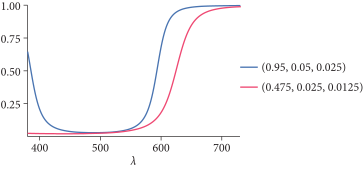图 4.32： 使用 sigmoid 多项式表示，高饱和度颜色在其光谱中可能会出现意想不到的特征。这里我们绘制了 RGBAlbedoSpectrum 对 RGB 颜色 \( (0.95,0.05,0.025) \) 返回的光谱，以及该颜色的所有分量除以二后的光谱。对于原始颜色，我们看到很大一部分范围的较高波长接近 1，而较低波长的能量则高于预期。如果该颜色除以二，得到的光谱表现得更为良好，但请注意，在较高波长处，其幅度超过了原始红色值 \( 0.475 \)。
/** Spectrum 方法定义 */
RGBUnboundedSpectrum::RGBUnboundedSpectrum(const RGBColorSpace &cs,
RGB rgb) {
Float m = std::max({rgb.r, rgb.g, rgb.b});
scale = 2 * m;
rsp = cs.ToRGBCoeffs(scale ? rgb / scale : RGB(0, 0, 0));
}
/** RGBUnboundedSpectrum 私有成员 */
Float scale = 1;
RGBSigmoidPolynomial rsp;
与 RGBAlbedoSpectrum 实现相比，这里的波长评估和 MaxValue() 方法仅增加了乘以缩放因子。 Sample() 方法也进行了类似的更新，但未在此处包含。
/** RGBUnboundedSpectrum 公有方法 */
Float operator()(Float lambda) const { return scale * rsp(lambda); }
Float MaxValue() const { return scale * rsp.MaxValue(); }
RGB 光源（RGB Illuminants）
如第 4.4.2 节中光源光谱的图示所示，现实世界中的光源通常具有复杂的光谱分布。给定使用 RGB 颜色指定的光源，我们不尝试推断复杂的光谱分布，而是将保持平滑的光谱，并进行适当的缩放。具体细节由 RGBIlluminantSpectrum 类处理。
/** Spectrum 定义 */
class RGBIlluminantSpectrum {
public:
/** RGBIlluminantSpectrum 公有方法 */
RGBIlluminantSpectrum() = default;
RGBIlluminantSpectrum(const RGBColorSpace &cs, RGB rgb);
Float operator()(Float lambda) const {
if (!illuminant) return 0;
return scale * rsp(lambda) * (*illuminant)(lambda);
}
Float MaxValue() const {
if (!illuminant) return 0;
return scale * rsp.MaxValue() * illuminant->MaxValue();
}
const DenselySampledSpectrum *Illuminant() const {
return illuminant;
}
PBRT_CPU_GPU
SampledSpectrum Sample(const SampledWavelengths &lambda) const {
if (!illuminant) return SampledSpectrum(0);
SampledSpectrum s;
for (int i = 0; i < NSpectrumSamples; ++i)
s[i] = scale * rsp(lambda[i]);
return s * illuminant->Sample(lambda);
}
std::string ToString() const;
private:
/** RGBIlluminantSpectrum 私有成员 */
Float scale;
RGBSigmoidPolynomial rsp;
const DenselySampledSpectrum *illuminant;
};
除了与 RGBUnboundedSpectrum 中相同的用来允许任意最大 RGB 值的缩放因子， RGBIlluminantSpectrum 还将给定波长返回的值乘以该波长下色彩空间标准光源的值。光源的光谱建模的一个非直观方面是，均匀光谱通常在转换为 RGB 后并不映射到中性白色。色彩空间总是假设观察者适应某种环境光照，这会影响颜色感知和中性色的概念。例如，常用的 D65 白点是典型的日光照明条件下的平均值。因此，为了重现具有所需颜色的光源，我们使用一种粗略但有效的解决方案，即将白点与合适的反射光谱相乘。从概念上讲，这类似于通过彩色胶片观察白色参考光源。它还确保被白光照亮的白色物体在渲染图像中产生白色像素值。
/** Spectrum 方法定义 */
RGBIlluminantSpectrum::RGBIlluminantSpectrum(const RGBColorSpace &cs,
RGB rgb)
: illuminant(&cs.illuminant) {
Float m = std::max({rgb.r, rgb.g, rgb.b});
scale = 2 * m;
rsp = cs.ToRGBCoeffs(scale ? rgb / scale : RGB(0, 0, 0));
}
因此，一个指向光源的指针被保存在成员变量中。
/** RGBIlluminantSpectrum 私有成员 */
Float scale;
RGBSigmoidPolynomial rsp;
const DenselySampledSpectrum *illuminant;
各种 Spectrum 接口方法的实现如下；这里是评估单个波长下光谱分布的方法。有一个细节是，我们必须处理 nullptr illuminant 的情况，这会发生在 RGBIlluminantSpectrum 被默认初始化的时候。在这种情况下，结果应该是一个零值光谱。
/** RGBIlluminantSpectrum 公有方法 */
Float operator()(Float lambda) const {
if (!illuminant) return 0;
return scale * rsp(lambda) * (*illuminant)(lambda);
}
我们在这里不包括 Sample() 或 MaxValue() 方法的实现，因为它们的实现与预期相同。